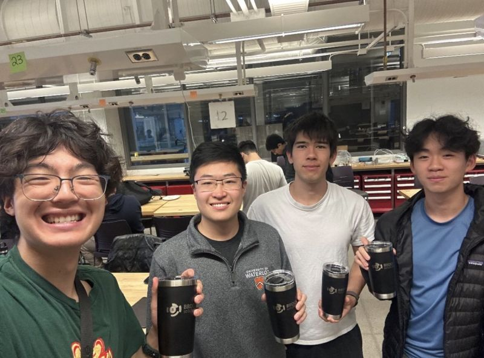

GateWise Algorithm
Brock Solutions Airport Innovation Hackathon
The Team

Interactive Dashboard Demo
Explore a replay generated from our gate-assignment algorithm using a gate-outage scenario. This is a precomputed simulation, not live airport data.
The Design
A gate-assignment algorithm and interactive airport dashboard designed for Toronto Pearson to help manage flight and gate conflicts.
Design Process
- Built the gate-assignment logic in Python.
- Created an HTML dashboard to visualize airport operations and assignments.
- Used the dashboard to demonstrate the solution with flight and gate scenarios.
Results and Skills
Reduced gate conflicts by 28% compared with the baseline. The team won first place in Ideation for the solution and interactive dashboard.
- Python algorithm development
- HTML dashboard development
- Agentic programming and teamwork